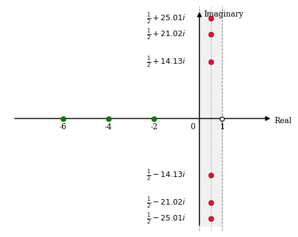
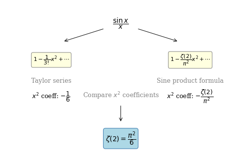
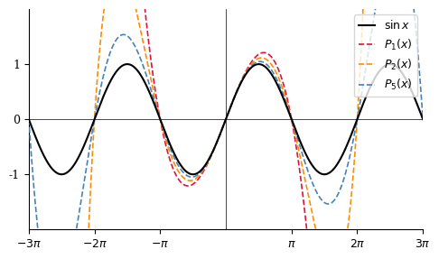

#01 Intro and the Basel Problem#
Riemann zeta function의 기본 성질을 소개하고, Basel problem \(\zeta(2) = \pi^2/6\)을 Euler의 sine product formula를 이용하여 증명한다.
Source: Zeta Explained #01
Reference: The Riemann Zeta-Function by Aleksandar Ivić (John Wiley & Sons, 1985)
Overview
Riemann zeta function을 설명하는 시리즈의 첫 번째 강의이다. 이 시리즈는 기초부터 시작하여 critical strip 내 zero의 개수를 \(O(T \log T)\)로 추정하는 Riemann–von Mangoldt equation까지 단계적으로 다룬다. 수강자는 calculus와 complex numbers에 대한 기본 지식을 갖추고 있다고 가정하며, complex analysis의 관련 개념은 강의 중에 필요에 따라 설명한다. 이 강의에서는 zeta function의 소개와 Basel problem의 증명을 다룬다.
Contents
Riemann zeta function의 소개 및 기본 성질
강의 시리즈의 범위: Basel problem에서 Riemann–von Mangoldt equation까지
Riemann zeta function의 정의
\(1 + 2 + 3 + 4 + \cdots = -1/12\)의 의미와 analytic continuation
Basel problem: \(\zeta(2) = \pi^2/6\)의 소개
Basel problem 증명의 개요
유한한 경우의 함수 factorization
Sine function의 infinite product factorization
Infinite product 전개와 \(x^2\) 계수 추출
계수 비교를 통한 Basel problem 해결
1. Zeta in the Complex Plane#
Riemann zeta function \(\zeta(s)\)는 complex function으로, 복소수 \(s\)를 입력으로 받아 복소수를 출력한다. 복소평면(complex plane)은 수평 방향의 real axis와 수직 방향의 imaginary axis로 구성된 2차원 평면으로, 복소수 \(s = \sigma + it\) (\(\sigma, t \in \mathbb{R}\))를 시각화하는 데 사용된다. 이 강의 시리즈 전반에 걸쳐 \(\zeta(s)\)의 입력 공간, 즉 complex plane을 시각화하는 방식으로 논의가 전개된다.
\(\zeta(s)\)의 두 가지 핵심 성질은 다음과 같다.
\(\zeta(s)\)는 \(s = 1\)에서 pole(singularity)을 가진다.
\(\zeta(s) = 0\)이 되는 \(s\)의 값, 즉 zeros의 분포가 핵심 관심사이다.
Zeros의 분류#
\(\zeta(s)\)의 zeros는 두 종류로 구분된다.
Trivial zeros는 음의 짝수 정수에 위치하며, 이후 강의에서 증명된다.
Nontrivial zeros는 다음과 같이 정의되는 critical strip 내부에 무한히 많이 존재한다.
Critical strip은 \(\operatorname{Re}(s) = 0\)과 \(\operatorname{Re}(s) = 1\)을 양 경계로 하는 무한히 긴 수직 띠 영역이다. Nontrivial zeros의 개수가 무한함은 이후 강의에서 증명된다.
현재까지 수치적으로 확인된 첫 번째 nontrivial zeros는 다음과 같다 (소수점 이하 두 자리로 반올림).
이들 값은 모두 무리수이며, 그래프에서는 반올림된 값으로 표시된다.

Figure 1. 복소평면에서 \(\zeta(s)\)의 zeros 분포
복소평면에서 \(\zeta(s)\)의 zeros 분포를 나타낸다. Trivial zeros(녹색)는 음의 짝수 정수 \(s = -2, -4, -6, \ldots\)에 위치한다. Nontrivial zeros(적색)는 \(\operatorname{Re}(s) = 0\)과 \(\operatorname{Re}(s) = 1\)을 양 경계로 하는 critical strip 내부에 존재하며, 그 개수는 무한하다. 현재까지 수치적으로 확인된 모든 nontrivial zeros는 예외 없이 critical line \(\operatorname{Re}(s) = 1/2\) 위에 위치한다. Riemann hypothesis는 이 관찰이 모든 nontrivial zeros에 대해 성립한다고 주장하지만, 이는 아직 증명되지 않은 conjecture이다. 그래프에 표시된 첫 번째 zeros의 허수부 값 \(14.13\), \(21.02\), \(25.01\)은 모두 무리수이며, 반올림된 값으로 표시되어 있다.
Riemann Hypothesis (1859)#
Riemann hypothesis는 모든 nontrivial zeros가 다음 critical line 위에 놓인다고 주장한다.
이는 단순히 zeros가 critical strip 안에 존재한다는 사실보다 훨씬 강한 주장이다. 현재까지 발견된 모든 nontrivial zeros는 Riemann hypothesis를 만족하지만, 이 명제는 아직 증명되지 않은 conjecture로 남아 있다. Clay Mathematics Institute의 Millennium Prize Problem 중 하나로 선정되어, 증명 또는 반례 제시에 $1,000,000달러의 상금이 걸려 있다. 단 하나의 반례, 즉 critical line 위에 놓이지 않는 nontrivial zero를 발견하는 것만으로도 상금 수령이 가능하다.
2. Scope of This Series#
본 강의 시리즈는 Basel problem을 출발점으로 삼아, Ivić(1985)의 저서 1장을 따라 다음 주제들을 순서대로 다룬다.
The Euler product formula
Analytic continuation
Laurent series for \(\zeta(s)\) at \(s = 1\)
The functional equation relating \(\zeta(s)\) to \(\zeta(1-s)\)
The Hadamard product formula
The Riemann–von Mangoldt equation
The Riemann Hypothesis and the Lindelöf Hypothesis
3. Prerequisites#
본 강의 시리즈를 학습하기 위해 필요한 사전 지식은 다음과 같다.
Calculus: 증명의 상당 부분이 integral과 infinite series를 포함하므로, 기초 미적분학 지식이 필수적으로 요구된다. 특히 수렴·발산 판정, 급수 전개, 적분 기법에 익숙하여야 한다.
Complex numbers: 복소수 \(z = a + bi\) (\(a, b \in \mathbb{R}\), \(i = \sqrt{-1}\))의 기본 개념과 복소평면에서의 해석 방법을 숙지하여야 한다. \(e^{i\pi} = -1\)과 같은 Euler의 공식이 의미하는 바를 직관적으로 이해하고 있을 것을 권장한다.
Complex analysis: 강의의 주제 자체가 complex analysis이나, 사전 지식이 반드시 요구되지는 않는다. 강의 방침은 다음과 같다. complex analysis의 일반적인 정리는 증명 없이 인용하고, \(\zeta(s)\)에 직접 관련된 결과만 상세히 증명한다. 따라서 강의를 수강하며 필요한 내용을 함께 습득하는 것이 가능하다.
4. The Zeta Function#
실수 \(s > 1\)에서 Riemann zeta function은 다음과 같이 정의된다.
변수로 \(s\)를 사용하는 것은 역사적 관례에 따른 것으로, 일반적인 calculus에서 사용하는 \(x\)와 동일한 역할을 한다. 이 급수는 \(\operatorname{Re}(s) > 1\)을 만족하는 모든 복소수 \(s\)에 대해 수렴함이 알려져 있으며, 이후 강의에서 analytic continuation을 통해 \(s \neq 1\)인 모든 복소수로 정의역이 확장된다.
특수값#
Basel problem (\(s = 2\)): 자연수의 제곱에 대한 역수의 합으로, 이 강의의 주된 증명 대상이다.
Pole (\(s = 1\)): \(s = 1\)을 대입하면 harmonic series가 되어 발산한다. 따라서 \(\zeta(s)\)는 \(s = 1\)에서 정의되지 않으며, 이 점이 유일한 pole이다. 엄밀히는 \(s > 1\)인 경우에만 급수 정의가 유효하므로, \(s = 1\)의 대입 자체가 허용되지 않으나, 발산의 양상을 이해하기 위한 예시로 제시된다.
\(s < 1\)인 경우: \(s < 1\)이면 각 항 \(1/n^s\)가 \(s = 1\)의 대응 항 \(1/n\)보다 크거나 같다. 즉, 각 항을 harmonic series의 항과 비교(comparison test)하면,
이므로 harmonic series의 발산에 의해 \(s \leq 1\)인 모든 실수에 대해 급수가 발산한다. 특히 \(s = 0\)이면 각 항이 모두 \(n^0 = 1\)이 되어 급수가 발산함을 직접 확인할 수 있다.
Analytic continuation과 \(\zeta(-1)\)#
Analytic continuation을 통해 \(\zeta(s)\)를 \(s \neq 1\)인 모든 복소수로 확장하면, 형식적으로는 발산하는 급수에 해당하는 값에도 의미를 부여할 수 있다. 대표적인 예로,
이 있다. 이는 Numberphile의 YouTube 영상(2014)을 통해 널리 알려진 결과로,
와 같이 표현되기도 한다. \(\zeta(-1)\)에 형식적으로 급수 정의를 적용하면 \(1/n^{-1} = n\)이므로 \(1 + 2 + 3 + \cdots\)가 되는데, 이를 \(-1/12\)와 등치시키는 것은 analytic continuation의 의미에서 성립하는 것이다. 해당 급수가 통상적인 의미에서 수렴한다는 뜻이 아님에 주의하여야 한다.
5. The Basel Problem#
역사적 배경#
Basel problem은 Pietro Mengoli(1650)가 최초로 제기한 문제로, 양의 정수의 제곱에 대한 역수의 합이 어떤 값으로 수렴하는지를 묻는다.
이 문제는 약 80년간 미해결로 남아 있다가, Euler(1734–5)에 의해 최초로 해결되었다.
Euler의 원래 증명은 현대적 기준에서 완전히 엄밀하다고 보기 어려운 부분을 포함하고 있으나, 핵심 아이디어는 수학적으로 타당하며 깊은 통찰을 담고 있다.
6. Numerical Approximation#
Euler는 Basel problem의 닫힌 형태(closed form)를 추측하기 위해 먼저 수치적 근사를 수행하였다. 이 과정은 증명보다 선행된 발견적(heuristic) 접근이었다.
단순한 partial sum의 방법은 수렴 속도가 매우 느리다는 문제가 있다. 첫 10,000항까지 더하면 다음과 같은 결과를 얻는데,
이는 \(n^{-2}\)의 수렴 속도가 \(O(N^{-1})\)로 느리기 때문이다. 당시 1700년대의 계산 환경에서 \(1/9{,}801\)이나 \(1/7{,}137^2\)과 같은 값을 손으로 계산하는 것은 사실상 불가능에 가까웠다.
이러한 한계를 극복하기 위해 Euler는 Euler-Maclaurin summation 기법을 활용하여 20자리 정확도를 달성하였다.
한편 1730년경에는 이미 \(\pi\)가 100자리 이상의 정밀도로 계산되어 있었다. Euler는 위에서 얻은 수치와 \(\pi^2/6\)의 값을 비교하여 이 급수의 합이 \(\pi^2/6\)임을 추측하였고, 이후 이를 증명하는 데 성공하였다. 결과에 \(\pi\)가 포함되어 있다는 점에서, sine 함수가 증명의 열쇠가 될 것임을 자연스럽게 예상할 수 있다.
7. Euler’s Proof of the Basel Problem#
Euler의 증명은 \(\sin x / x\)에 대한 두 가지 표현, 즉 Taylor series와 infinite product factorization의 \(x^2\) 계수를 비교하는 방식으로 이루어진다.

Figure 2. Euler의 Basel problem 증명 구조
Euler의 Basel problem 증명 구조를 슬라이드에 나타낸 것이다. \(\sin x / x\)는 두 가지 방식으로 전개된다. 좌변은 Taylor series로부터
이며, \(x^2\)의 계수 \(-1/6\)은 이미 알려진 결과이다. 우변은 infinite product factorization으로부터
이며, \(x^2\)의 계수 \(-\zeta(2)/\pi^2\)을 도출하는 것이 증명의 핵심 단계이다. 슬라이드에서 이 단계는 가장 어려운 부분으로 강조되어 있다. 두 전개의 \(x^2\) 계수를 등치시키면 \(\zeta(2) = \pi^2/6\)이 즉시 얻어진다. 증명의 논리적 흐름은 두 개의 독립적인 전개를 한 점에서 비교하는 단순한 구조임에도 불구하고, 결과로 나오는 \(\pi\)와 \(\zeta\) 사이의 연결이 갖는 수학적 깊이가 이 증명을 특별하게 만든다.
Step 1. Taylor Series of \(\sin x\)#
\(\sin x\)의 Taylor series는 다음과 같이 잘 알려져 있다.
양변을 \(x\)로 나누면,
를 얻는다. 여기서 \(x^2\)의 계수는 \(-1/3! = -1/6\)임을 기억한다.
Step 2. Zeros of \(\sin x\)#
\(\sin x\)의 zeros는 다음과 같다.
또한 \((\sin x)' = \cos x\)이므로 \(f'(0) = \cos(0) = 1\)이 성립하고, \(\sin x\)의 Taylor series는 \(x + \cdots\)의 형태로 시작한다. 이 조건, 즉 \(x = 0\) 근방에서 \(\sin x \approx x\)라는 사실은 이후 product formula를 구성하는 데 핵심적으로 활용된다.
Step 3. Factorization Analogy (유한한 경우)#
무한 곱으로의 확장을 이해하기 위해, 먼저 유한한 경우의 factorization 패턴을 관찰한다. 양의 정수 \(1, 2, 3, \ldots\)에서 zeros를 가지는 다항식을 Taylor series의 첫 항이 \(x\)가 되도록 정규화하면 다음과 같은 패턴이 나타난다.
각 단계에서 \((x - k)\)를 \((k - x)\)로 뒤집으면 부호가 바뀐다. 이 부호 변화는 인수의 개수에 따라 교대로 나타나므로, 인수의 수가 짝수이면 전체 부호가 양수, 홀수이면 음수가 된다. \(n\)개의 인수를 가지는 경우 \(x\)의 계수가 \(n!\)로 성장하므로, 이를 \(n!\)로 나누어 \(x\)의 계수를 1로 고정하면 다음과 같은 형태를 얻는다.
이 함수는 \(x = 0, 1, \ldots, n-1\)에서 zeros를 가지며, Taylor series의 첫 항이 \(x\)임을 확인할 수 있다.
Step 4. Sine Product Formula (Euler’s factorization)#
\(\sin x\)는 \(x = n\pi\) (\(n \in \mathbb{Z}\))에서 zeros를 가지고, Taylor series의 첫 항이 \(x\)인 점이 위의 유한한 경우와 완전히 유사하다. Euler는 이를 무한한 경우로 확장하여, \(\sin x\)의 factorization이 다음과 같이 표현된다고 주장하였다.
여기서 차이의 곱 공식 \((a-b)(a+b) = a^2 - b^2\)을 이용하여 각 pair를 결합하면,
이므로, infinite product는 다음과 같이 단순화된다.
양변을 \(x\)로 나누면,
이 infinite product를 Desmos 등의 도구로 유한 항까지 계산하면 \(\sin x\)의 그래프와 매우 잘 일치함을 확인할 수 있으며, 항의 수를 늘릴수록 수렴이 개선된다.

Figure 3. Sine product formula 유한 항 근사와 \(\sin x\)의 비교
Sine product formula의 유한 항 근사
와 \(\sin x\)를 겹쳐 나타낸 그래프이다. \(N\)이 작을 때에는 근사가 \(\sin x\)와 크게 벗어나지만, \(N\)이 증가함에 따라 \(P_N(x)\)가 \(\sin x\)에 점점 가까워짐을 확인할 수 있다. 이는 Euler의 infinite product factorization이 수치적으로 타당함을 시각적으로 뒷받침하는 근거이다. 단, 이 수렴성의 엄밀한 정당화는 Euler의 시대에는 이루어지지 않았으며, Weierstrass Factorization Theorem (1870년대)에 의해 사후적으로 증명되었다. 그래프에서 \(\sin x\)의 zeros인 \(x = \pm\pi, \pm 2\pi, \ldots\)에서 \(P_N(x)\)도 정확히 zero가 됨을 확인할 수 있는데, 이는 product formula의 구성 방식에서 직접 보장되는 성질이다.
주의: 이 단계는 Euler의 원래 증명에서 엄밀하지 않은 부분이다. 유한한 경우에 성립하는 factorization을 무한한 경우로 직접 확장하는 것은 일반적으로 정당화되지 않는다. 이 단계는 약 100년 후, Weierstrass(1870년대)가 analytic function에 대한 Weierstrass Factorization Theorem을 증명함으로써 사후적으로 엄밀하게 정당화되었다.
Step 5. \(x^2\) 계수 비교#
Sine product formula의 infinite product를 전개할 때, 상수항은 모든 인수에서 1을 선택함으로써 얻어지고 그 값은 1이다. \(x\) 항은 존재하지 않는데, 이는 모든 인수가 \(x^2\)의 배수를 포함하므로 어떤 조합으로 선택하더라도 \(x^1\)의 항을 만들 수 없기 때문이다. 따라서 \(x^2\) 항을 구하려면, 하나의 인수에서 \(-x^2/(n^2\pi^2)\) 항을 선택하고 나머지 모든 인수에서 1을 선택하는 경우만 기여한다. 이를 정리하면,
Step 6. 결론#
Step 1의 Taylor series와 Step 5의 product formula 전개 결과에서 \(x^2\)의 계수를 등치시키면,
이로부터 Basel problem의 해가 도출된다.
Euler의 실제 논문에서는 이보다 일반화된 방법이 사용되었으며, 각주를 통해 \(\zeta(2)\)만을 구하는 더 간결한 방법이 존재함을 언급하고 있다. 위에 서술된 증명은 아마도 Euler가 최초로 발견한 방법에 가까운 것으로 추정된다.
8. Summary#
Riemann zeta function \(\zeta(s)\)는 complex function으로, \(\operatorname{Re}(s) > 1\)에서 infinite series \(\zeta(s) = \sum_{n=1}^{\infty} 1/n^s\)로 정의되며, analytic continuation을 통해 \(s \neq 1\)인 모든 복소수로 확장된다.
\(s = 1\)은 \(\zeta(s)\)의 유일한 pole이다. \(s \leq 1\)인 실수에 대해서는 급수가 발산한다.
Zeros는 trivial zeros(음의 짝수 정수)와 critical strip \(0 < \operatorname{Re}(s) < 1\) 내부에 무한히 존재하는 nontrivial zeros로 구분된다.
Riemann hypothesis(1859)는 모든 nontrivial zeros가 critical line \(\operatorname{Re}(s) = 1/2\) 위에 놓인다고 주장하는 미해결 conjecture이다. 증명 또는 반례 발견에 $1,000,000달러의 상금이 걸려 있다.
Basel problem \(\zeta(2) = \pi^2/6\)은 Mengoli(1650)가 제기하고 Euler(1734–5)가 해결하였다.
Euler는 먼저 Euler-Maclaurin summation으로 20자리 정확도의 수치를 얻어 \(\pi^2/6\)임을 추측한 후, \(\sin x / x\)의 Taylor series와 sine product formula의 \(x^2\) 계수를 비교하는 방법으로 이를 증명하였다.
증명의 핵심 단계인 infinite product factorization은 Weierstrass Factorization Theorem(1870년대)에 의해 사후적으로 엄밀하게 정당화되었다.
9. Review Questions#
Riemann zeta function \(\zeta(s)\)는 실수 범위에서 어떤 조건 하에 수렴하는가? 그 이유를 설명하라.
Trivial zeros와 nontrivial zeros를 각각 정의하고, 그 차이를 설명하라.
Critical strip과 critical line을 각각 수식으로 정의하라.
Riemann hypothesis는 무엇을 주장하는가? 이것이 단순히 “zeros가 critical strip 안에 있다”는 것보다 강한 이유를 설명하라.
\(s \leq 1\)인 경우 \(\zeta(s)\)의 급수 정의가 발산함을 comparison test를 이용하여 설명하라.
\(\sum_{n=1}^{N} 1/n^2\)의 수렴 속도가 느린 이유를 설명하고, Euler가 이를 극복한 방법을 서술하라.
Euler의 sine product formula 유도 과정에서 엄밀하지 않은 부분은 어디인가? 이것이 어떻게 정당화되었는가?
Sine product formula의 전개에서 \(x^2\) 계수를 구할 때, \(x\) 항이 존재하지 않는 이유를 설명하라.
\(\sin x / x\)의 Taylor series와 sine product formula의 \(x^2\) 계수를 비교하여 \(\zeta(2) = \pi^2/6\)을 도출하라.
\(\zeta(-1) = -1/12\)의 의미를 analytic continuation의 관점에서 설명하라.